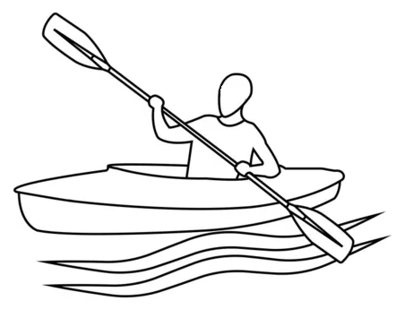

Oru Kayaks
Oru Kayaks — це унікальні складні каяки, натхненні принципами орігамі, що дозволяють згорнути їх до компактного розміру і легко транспортувати. Виготовлені з міцного поліпропілену, ці каяки відомі своєю портативністю та зручністю, що особливо приваблює людей з обмеженим місцем для зберігання або тих, хто цінує легкий транспорт. Моделі Oru варіюються від компактної Inlet, що підходить для спокійних вод, до більшої Beach LT, яка краще підходить для озер або повільних річок. Збірка зазвичай займає близько 5-10 хвилин після того, як ви звикнете до процесу, хоча це може бути складно на початку. Після складання каяки Oru демонструють хорошу стабільність і маневреність, з показниками, що можуть змагатися з традиційними жорсткими каяками. Однак вони мають обмежений доступ до відсіків для зберігання під час веслування, оскільки ці відсіки герметично закриті. Хоча каяки Oru дорожчі за деякі інші портативні варіанти, їх міцний дизайн і довговічність (розраховані на тисячі складань) роблять їх вигідною інвестицією для рекреаційних веслувальників. Наприклад, модель Oru Beach LT добре працює на відкритій воді і навіть витримує легкі хвилі, хоча може бути трохи незручною при транспортуванні через свою квадратну форму, коли вона складена
